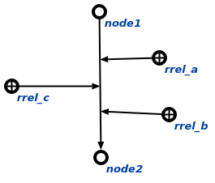
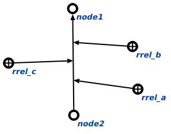

Команда изменения направления дуги предназначена для выполнения корректировки части базы знаний, путём изменения направления заданной дуги. Аргументом запроса является непосредственно дуга, направление которой необходимо изменить. Например, необходимо изменить направление дуги, связывающую узлы node1 и node2.

Результатом выполнения агента является измененная в противоположном направлении дуга.
